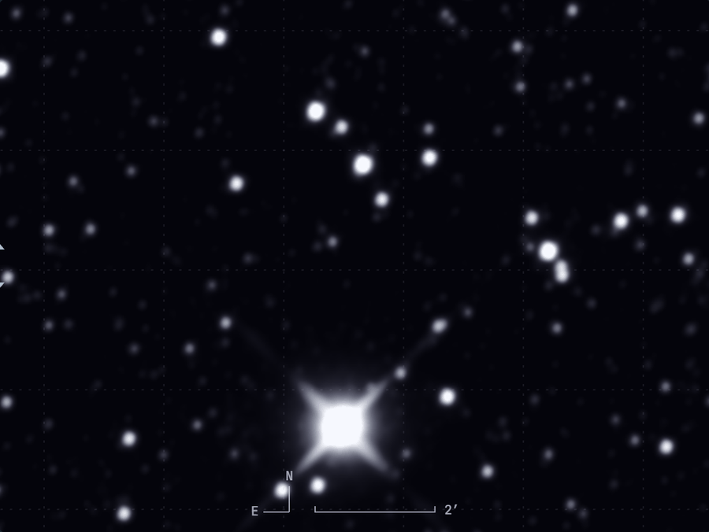
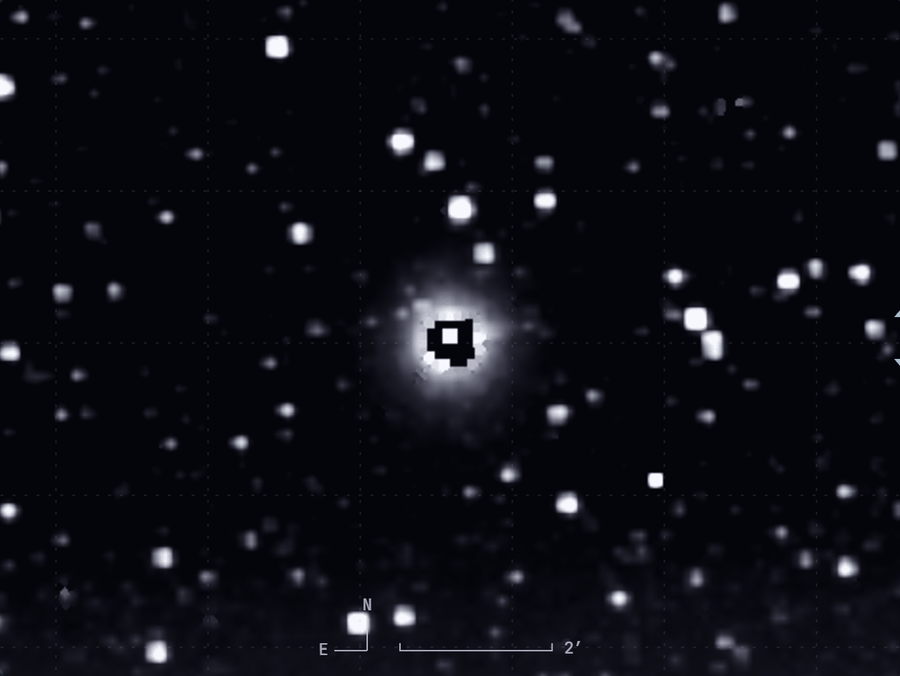
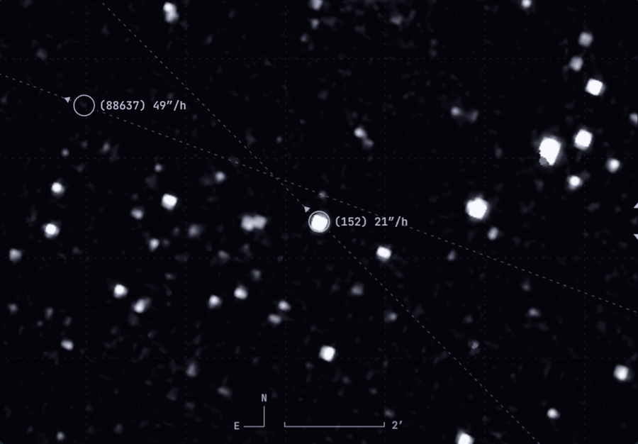
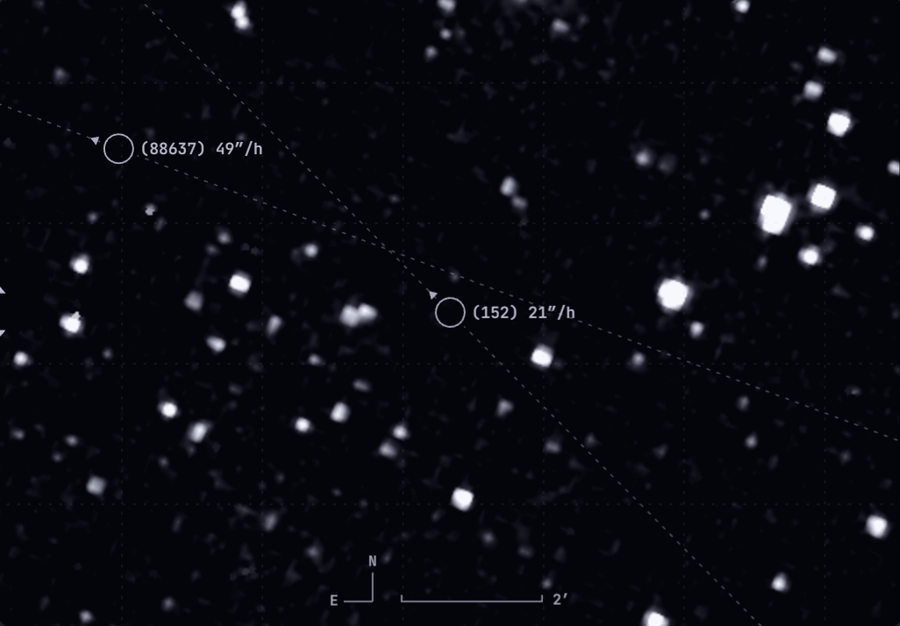
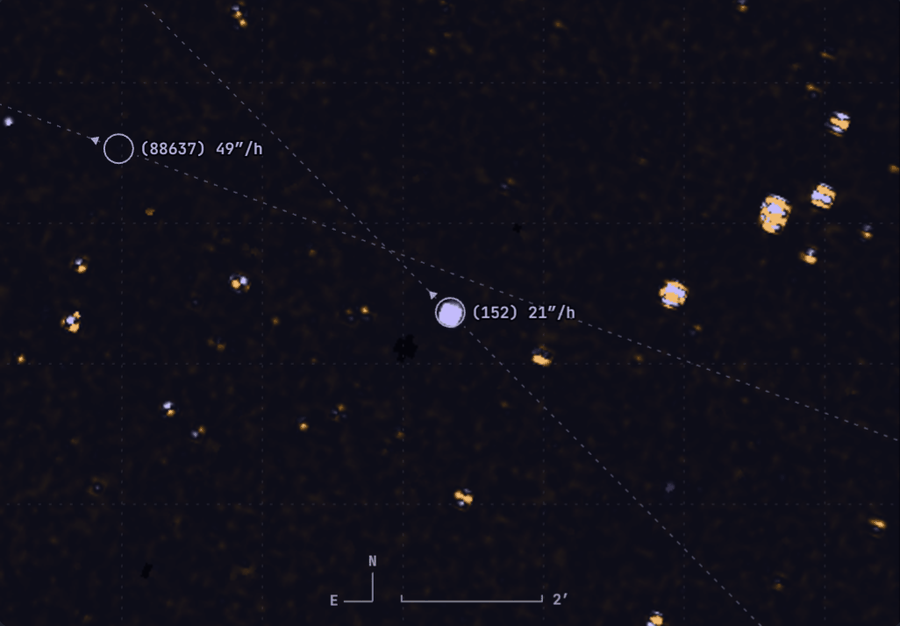
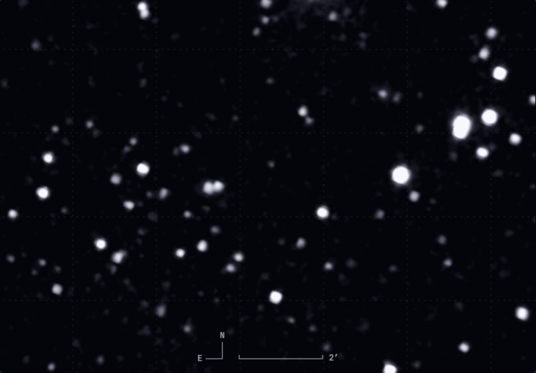
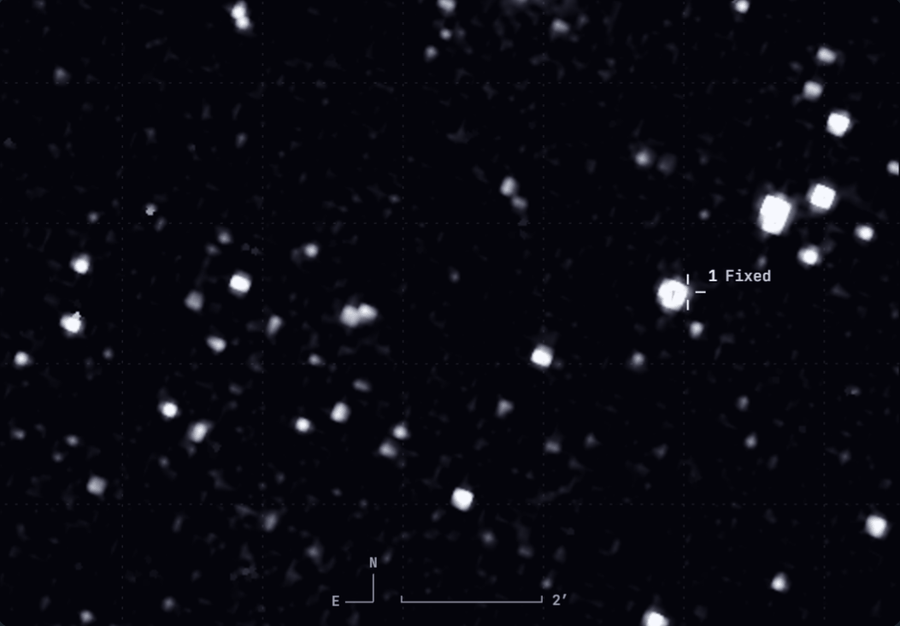
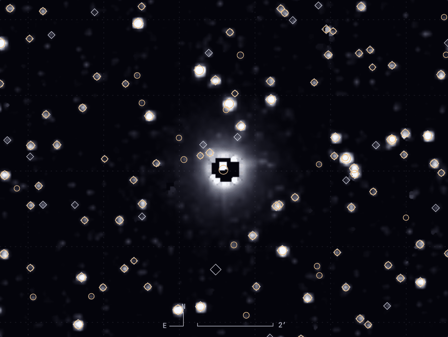

(152) Atala
- FLAGS
- 0x45
- bit 0
- TRANSIENT
- bit 2
- SUR_ERROR
- bit 6
- NONFUNC


A
B
- Khurshiddinov Timur Khurshiddinovich
- Stepan Ionichev
- Muhammadyusuf Bahtiyarov
- Edem
- Temur Kholjigitov
- Khamidkhodjayeva Fayziya




—%




public/js/release.js
export const COLLECTIONS = ['spherex_qr2', 'spherex_qr2_deep']; export const COLLECTIONS = [];
- npm run bake
- npm test